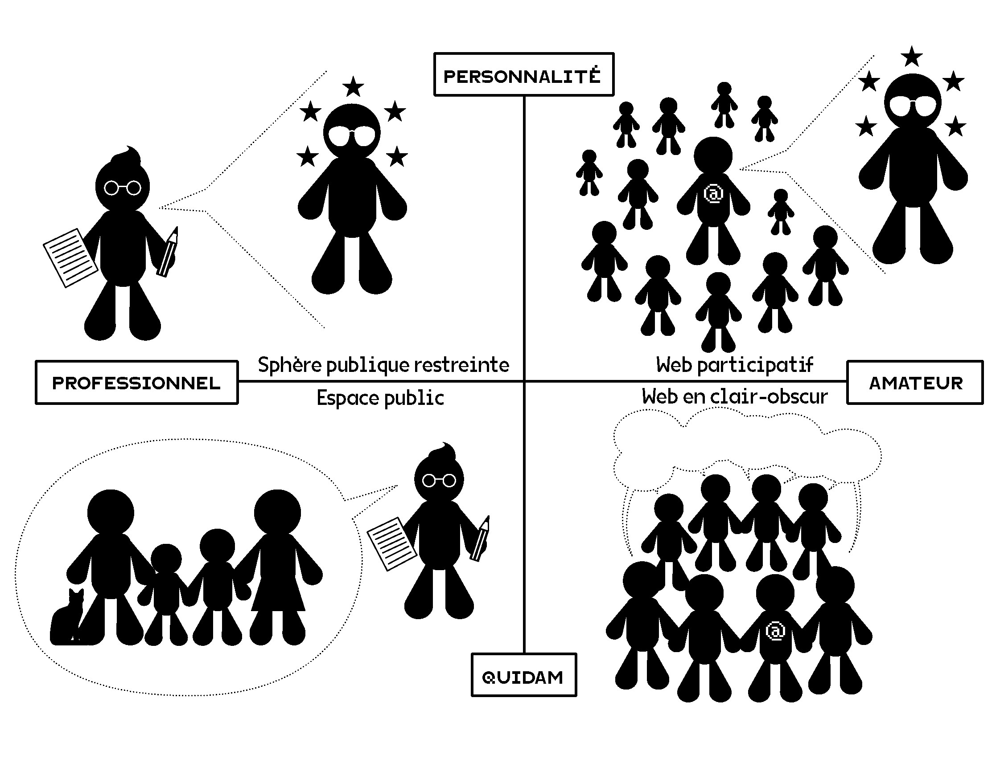

Les espaces numériques : sphères publiques ou espaces privés ?#
Une partie du succès du Web et, plus particulièrement, du “Web 2.0” réside dans la possibilité pour quiconque – à condition de maîtriser les outils informatiques – de publier n’importe quoi sur n’importe quel sujet. Nous avons déjà évoqué l’Internet Movie Data Base ou Wikipedia. Par exemple, vous avez tous la possibilité de modifier la page Wikipedia de Sciences Po.
Le concept de “Web 2.0” (utilisé en 2003 par Dale Dougherty) désigne l’ensemble des fonctionalités qui ont été dévelopé à la suite du Web originel afin de faciliter l’échange d’information et l’interactivité. Le symbole du Web 2.0 est probablement le “blog” que l’on rencontre encore aujourd’hui (les blogs de médiapart). En France, le site Skyblog ouvert en 2002 (de la radio Skyrock) était la première plateforme française de blog et aussi la plus importante. Elle a été arrêtée en 2023 et les blogs sont conservés aux archives nationales.
La dernière publication de Skyblog : https://www.skyrock.com/
Il ne faut pas non plus oublié lees forums, qui ont joué un rôle important dans la structuration de certaines communautés, notamment le champ de la santé, dans la mesure où ils ont facilité le partage d’expériences entre des personnes qui étaient éloignées géographiquement.
Enfin l’expression en ligne a évolué avec le succès des réseaux sociaux de Facebook à TikTok, en passant par Twitter, Instagram, Twitch, Youtube. S’il est difficile de mesurer la réelle portée politique des débats qui ont lieu sur ces plateformes, il est indéniable que Facebook, TikTok, X anciennement Twitter, Instagram, Twitch, Youtube, Whatsapp ou les boucles télégramme et les nombreuses autres plateformes font partie des lieux de fabrication du “public”.
Plusieurs questions se posent : comment les dynamiques sociales observables dans les espaces numériques intéragissent-elles avec les processus de publicisation ? Peut-on considérer les réseaux sociaux comme des espaces publics ? Comment les réseaux sociaux influencent la trajectoire d’un problème public ?
Dispositif technique et expression#
En premier lieu, les réseaux sociaux en tant que dispositifs matériels influent sur les processus de publicisation en contraignant le type d’action qu’il est possible de faire : puis-je réagir à une publication ? Puis-je le faire anonymement ? Dois-je créer un compte ? Est-ce un compte avec abonnement ? Quel est le degré de publicité des choses que je poste sur la plate-forme ? Et surtout quel esyt le niveau de compétence technique à avoir pour poster des publication ?
Par exemple, le “retweet” est une fonctionnalité qui est apparue tardivement sur Twitter. Au départ, il était seulement possible de “répondre”, ce qui favorisait la dimension dialogique. Le “retweet” est apparue à la demande des utilisateurs qui souhaitient partager des posts sans forcément les commenter. Progressivement, le “retweet” s’est imposé par rapport au “reply” renforçant la dimension plébicitaire de Twitter.
Les palteformes de réseaux sociaux participent à la construction de la sphère public à travers la définition des algorithmes de recommandation ou hiérarchisation des informations et la mise en avant, volontaire ou, non de certains sujets plutôt que d’autres. Ainsi, la récente décision de Meta de ne pas “suggérer” par défaut de contenus politiques est déjà une manière de cadrer les sujets, dans la mesure où l’entreprise dit ce qui révèle de la politique ou non. D’une certaine manière la plateforme impose un choix politique. De même on peut s’interroger sur l’impartialité de l’algorithme de X, sachant que son PDG a apporté publiquement sont soutien à Donald Trump.

Entre Champ des expériences vécues et sphères publiques#
En second lieu les espaces numériques, que ce soit les blogs ou les réseaux sociaux, ont transformé les modalités de publicisation. J’entends par là le processus par lequel une expérience a droit de citer dans l’espace public.
Pour comprendre les transformations numériques de l’espace public, Dominique Cardon [Cardon, 2019, p. 143] distingue 4 formes de prises de parole en public en fonction du statut du locuteur et de la nature du sujet.

La partie gauche du cadran (côté professionnel) correspond à l’espace public traditionnel ou, plus exactement, à l’espace médiatique. Des professionnels (souvent des journalistes) ont un quasi monopole sur ce qui est rendu public, qu’il s’agisse de l’actualité de personnalités (les politicien.nes, les chef.fes d’entreprises, etc.) ou de “quidam” (les faits divers). Ils jouent le rôle de “gatekeepers”. La partie droite (côté amateur) est l’un des effets des espaces numériques : il est devenu possible pour quiconque de publier sans passer par la voix d’un journaliste.
De cette manière, les espaces numériques tendent à rapprocher des sphères d’activités sociales qui sont habituellement séparées dans les espaces non numériques. C’est particulièrement le cas sur un réseau social comme Twitter où des conversations ordinaires peuvent être rendues public au même titre qu’une décision politique.
Les espaces numériques forment ainsi un nouvel outil de médiation entre le champs des expériences vécues et la “sphère publique de discussion et d’association” (ou arènes de discours publics) au sens habermassien du terme [Fraser, 2001, Habermas, 1978].
Habermas, à qui on attribue la paternité du concept de “sphère publique (bourgeoise)” (plus exactement celui de Öffenlichkeit), désigne à travers cette expression les cercles de socialisation qui ont émergé en France, en Angleterre et en Allemagne au XVIIIe siècle et dans lesquels les membres discutent rationnellement des affaires publiques, c’est-à-dire des décisions de l’État. En ce sens, comme le rappelle Nancy Fraser, la sphère publique au sens d’Habermas est distincte de l’État puisqu’il s’agit d’un lieu où il est en principe possible de critiquer l’État.
“Selon lui [Habermas], 1’ idee d’une sphere publique peut se comprendre comme un ensemble de « personnes privees » rassemblees pour debattre de sujets « d’interet public» ou « d’interet commun ». Cette idee a acquis force et realite au debut de l’Europe moderne ~ar la constitution<< de spheres publiques bourgeoises», se posant comme contrepoids face aux Etats absolutistes. Ces publics avaient vocation a servir de mediateurs entre la societe et l’Etat, en tenant ce dernier responsable devant la societe par le moyen de la publicité.” [Fraser, 2001, p. 130]
Dans cette sphère publique, la prise de parole est soumise à un ensemble de contraintes pour que la critique ou le problème qui est pointé soient entendus. Toutefois, il ne saurait exister de sphère publique sans “espace” pour faire l’expérience de ces problèmes [Cefaï, 2017, Cefaï, 2019, Cefaï and Terzi, 2012]. C’est ce que j’appelle le “champ des expériences vécues”. Les recherches d’inspiration pragmatiste montrent en effet qu’un problème existe d’abord à travers les expériences collectives que les individus en font [Cefaï, 2019, p. 32].